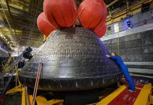

NASA astronauts Jessica Watkins and Luke Delaney, CSA (Canadian Space Agency) astronaut Joshua Kutryk, and Roscosmos cosmonaut Sergey Teteryatnikov are set to launch no earlier than mid-September as part of NASA's SpaceX Crew-13 mission.
NASA's SpaceX Crew-13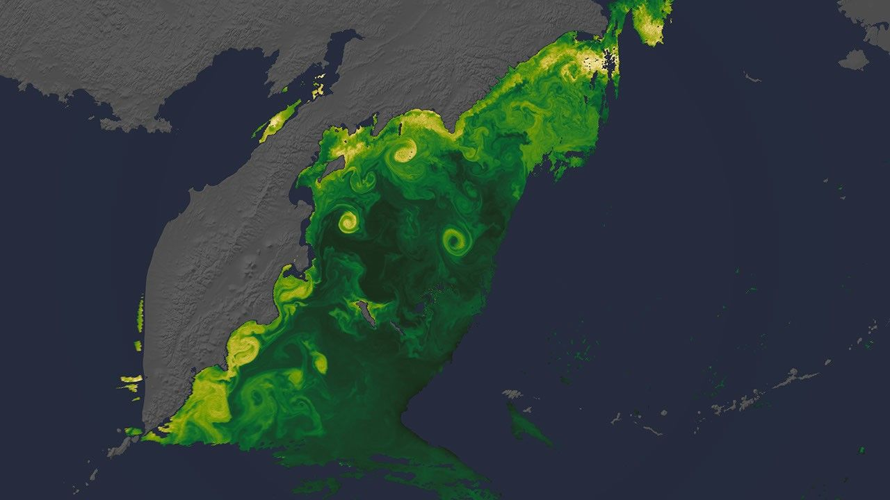
New NASA Views of Earth, From (S)PACE
ARTICLE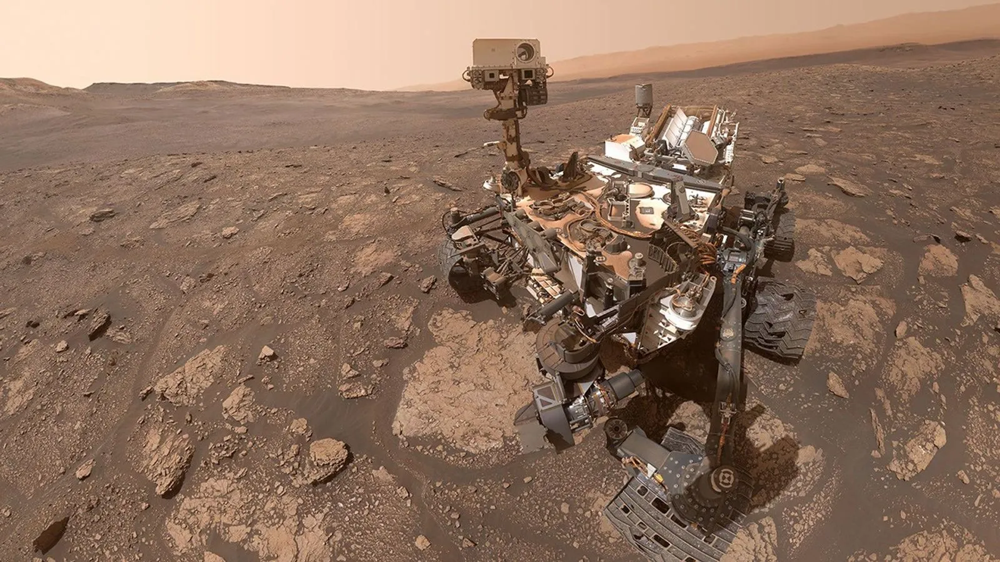
NASA's Curiosity Finds Organic Molecules Never Seen Before on Mars
ARTICLENASA Welcomes Jordan as 63rd Artemis Accords Signatory
ARTICLETime is so ubiquitous to our everyday lives that we often just think of it as numbers on a clock face. But what happens when we leave Earth? How do we track time where mornings and evenings don't match a 24-hour cycle? On the latest episode of "Houston We Have a Podcast," hear how NASA plans to keep time on other worlds.
Listen →NASA celebrates Hubble's 36th anniversary with a new image of the Trifid Nebula, a star-forming region it first captured in 1997. The telescope leveraged almost its full operational lifetime to show us changes in the nebula on human time scales with an improved camera.
Browse Image Archive →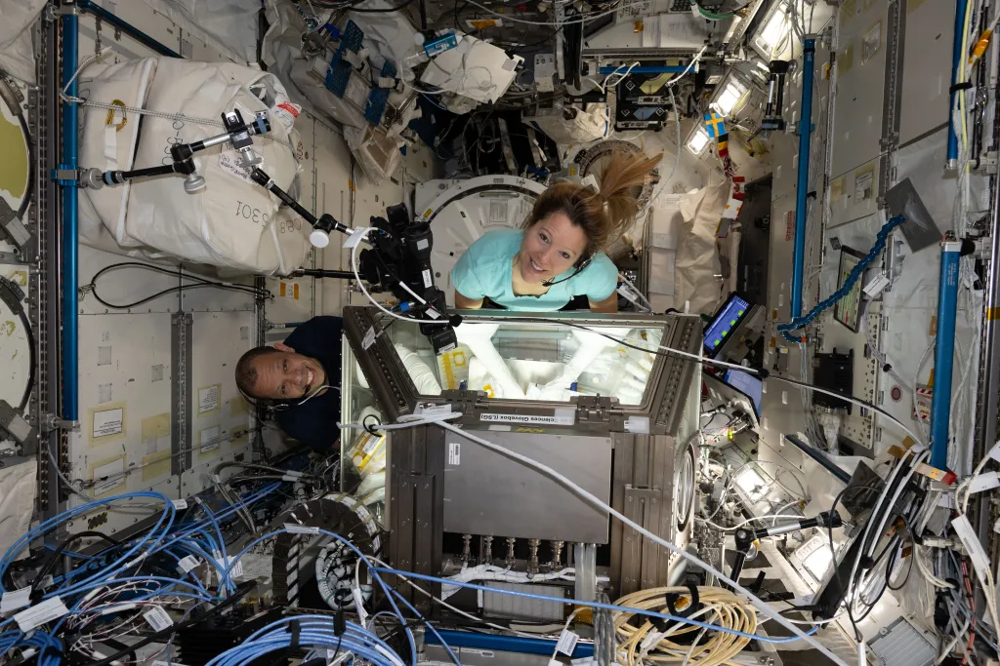



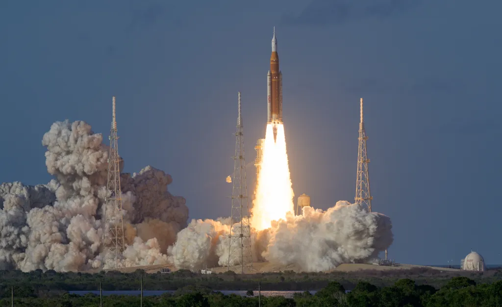


Freedom 250
Our spirit of adventure and innovation will raise our nation to new heights.
From the earliest days of exploration, to the first steps on the Moon and the missions shaping our future, NASA represents the spirit of discovery that defines our nation. As the United States approaches its semiquincentennial, Freedom 250 highlights how innovation, courage, and scientific leadership have carried America forward — and how NASA continues to expand the frontier for the next generation.
Learn More ➔
NASA’s X-59 is helping the nation celebrate the 250th anniversary of its independence with an update to its livery—its official paint job and insignia. The X-59 has sported a Freedom 250 logo on its engine since its second flight, and it will continue showing off the new detail with every upcoming test flight.
NASA/Carla Thomas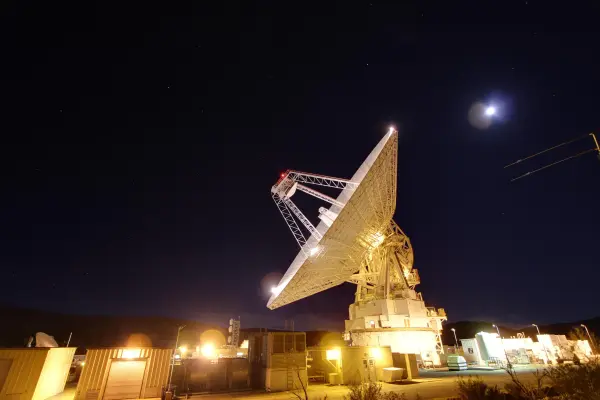
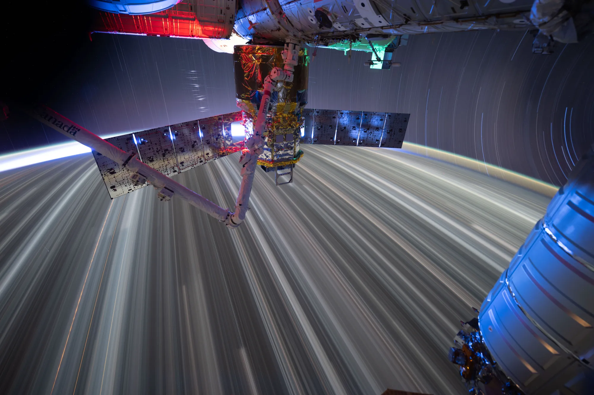
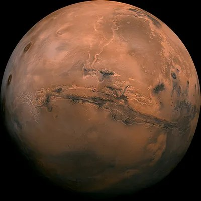
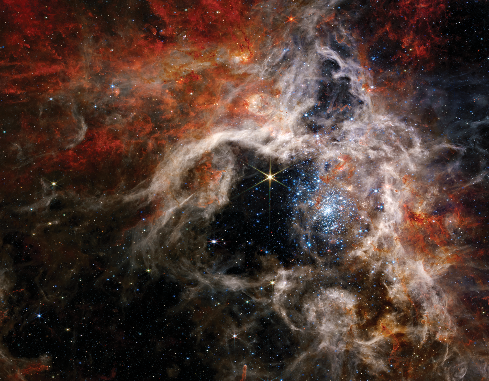
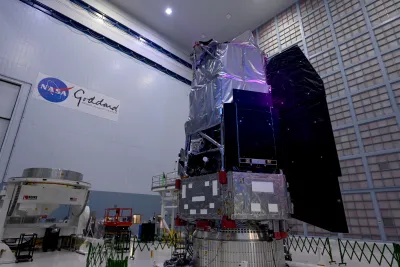
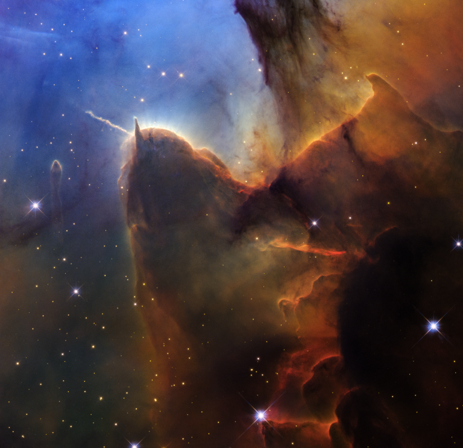